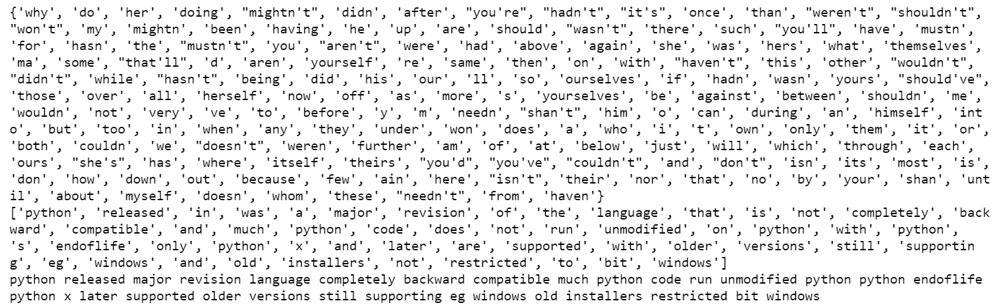

文本规范化¶
约 2520 个字 81 行代码 1 张图片 预计阅读时间 9 分钟
Reference¶
- https://www.geeksforgeeks.org/natural-language-processing-nlp-tutorial/
- https://www.geeksforgeeks.org/write-regular-expressions/
文本规范化将文本转换为一致的格式，提高了质量，使其更容易在NLP任务中处理.
文本规范化¶
在本文中，我们将学习如何使用Python规范化文本数据. 让我们先讨论一些概念：
- 文本数据是系统收集的材料，由书面、印刷或电子出版的文字组成，通常是有意撰写或从语音转录而来.
- 文本规范化是将文本转换为一种规范形式的过程，这种规范形式可能是文本之前并不具备的. 在存储或处理文本之前对其进行规范化，有助于分离关注点，因为在对输入数据进行操作之前，确保其一致性是很重要的. 文本规范化需要清楚了解要规范化的文本类型以及后续的处理方式；并不存在通用的规范化程序.
所需步骤¶
在这里，我们将讨论文本规范化所需的一些基本步骤.
- 输入文本字符串.
- 将字符串中的所有字母转换为一种大小写形式（小写或大写）.
- 如果数字对分析很重要，就将其转换为单词，否则删除所有数字.
- 删除标点符号和其他语法格式.
- 删除空白字符.
- 删除停用词.
- 进行其他必要的计算.
我们通过上述步骤进行文本规范化，每个步骤都有多种实现方式. 因此，我们将在整个过程中详细讨论每一个步骤.
文本字符串¶
# input string
string = " Python 3.0, released in 2008, was a major revision of the language that is not completely backward compatible and much Python 2 code does not run unmodified on Python 3. With Python 2's end-of-life, only Python 3.6.x[30] and later are supported, with older versions still supporting e.g. Windows 7 (and old installers not restricted to 64-bit Windows)."
print(string)
output:
” Python 3.0, released in 2008, was a major revision of the language that is not completely backward compatible and much Python 2 code does not run unmodified on Python 3. With Python 2’s end-of-life, only Python 3.6.x[30] and later are supported, with older versions still supporting e.g. Windows 7 (and old installers not restricted to 64-bit Windows).”
案例转换（转换为小写）¶
在Python中，lower()是一个用于字符串处理的内置方法. lower()方法会返回给定字符串的小写形式，它会将所有大写字符转换为小写. 如果字符串中不存在大写字符，则返回原始字符串.
# input string
string = " Python 3.0, released in 2008, was a major revision of the language that is not completely backward compatible and much Python 2 code does not run unmodified on Python 3. With Python 2's end-of-life, only Python 3.6.x[30] and later are supported, with older versions still supporting e.g. Windows 7 (and old installers not restricted to 64-bit Windows)."
# convert to lower case
lower_string = string.lower()
print(lower_string)
输出：
” python 3.0, released in 2008, was a major revision of the language that is not completely backward compatible and much python 2 code does not run unmodified on python 3. with python 2’s end-of-life, only python 3.6.x[30] and later are supported, with older versions still supporting e.g. windows 7 (and old installers not restricted to 64-bit windows).”
删除数字¶
如果数字与您的分析无关，则将其删除. 通常，会使用正则表达式来删除数字.
# import regex
import re
# input string
string = " Python 3.0, released in 2008, was a major revision of the language that is not completely backward compatible and much Python 2 code does not run unmodified on Python 3. With Python 2's end-of-life, only Python 3.6.x[30] and later are supported, with older versions still supporting e.g. Windows 7 (and old installers not restricted to 64-bit Windows)."
# convert to lower case
lower_string = string.lower()
# remove numbers
no_number_string = re.sub(r'\d+','',lower_string)
print(no_number_string)
输出：
” python ., released in , was a major revision of the language that is not completely backward compatible and much python code does not run unmodified on python . with python ‘s end-of-life, only python ..x[] and later are supported, with older versions still supporting e.g. windows (and old installers not restricted to -bit windows).”
删除标点符号¶
删除标点符号这一步也可以使用正则表达式来完成.
# import regex
import re
# input string
string = " Python 3.0, released in 2008, was a major revision of the language that is not completely backward compatible and much Python 2 code does not run unmodified on Python 3. With Python 2's end-of-life, only Python 3.6.x[30] and later are supported, with older versions still supporting e.g. Windows 7 (and old installers not restricted to 64-bit Windows)."
# convert to lower case
lower_string = string.lower()
# remove numbers
no_number_string = re.sub(r'\d+','',lower_string)
# remove all punctuation except words and space
no_punc_string = re.sub(r'[^\w\s]','', no_number_string)
print(no_punc_string)
输出：
‘ python released in was a major revision of the language that is not completely backward compatible and much python code does not run unmodified on python with python s endoflife only python x and later are supported with older versions still supporting eg windows and old installers not restricted to bit windows’
删除空白字符¶
strip()函数是Python编程语言中的一个内置函数，它会返回字符串的副本，并删除字符串开头和结尾的字符（根据传入的字符串参数决定删除哪些字符）.
# import regex
import re
# input string
string = " Python 3.0, released in 2008, was a major revision of the language that is not completely backward compatible and much Python 2 code does not run unmodified on Python 3. With Python 2's end-of-life, only Python 3.6.x[30] and later are supported, with older versions still supporting e.g. Windows 7 (and old installers not restricted to 64-bit Windows)."
# convert to lower case
lower_string = string.lower()
# remove numbers
no_number_string = re.sub(r'\d+','',lower_string)
# remove all punctuation except words and space
no_punc_string = re.sub(r'[^\w\s]','', no_number_string)
# remove white spaces
no_wspace_string = no_punc_string.strip()
print(no_wspace_string)
输出：
‘python released in was a major revision of the language that is not completely backward compatible and much python code does not run unmodified on python with python s endoflife only python x and later are supported with older versions still supporting eg windows and old installers not restricted to bit windows’
删除停用词¶
“停用词”是语言中最常见的词汇，如“the”“a”“on”“is”“all”等. 这些词不携带重要意义，通常会从文本中删除. 可以使用自然语言处理工具包（NLTK）来删除停用词，NLTK是一组用于符号和统计自然语言处理的库和程序.
# download stopwords
import nltk
nltk.download('stopwords')
# import nltk for stopwords
from nltk.corpus import stopwords
stop_words = set(stopwords.words('english'))
print(stop_words)
# assign string
no_wspace_string='python released in was a major revision of the language that is not completely backward compatible and much python code does not run unmodified on python with python s endoflife only python x and later are supported with older versions still supporting eg windows and old installers not restricted to bit windows'
# convert string to list of words
lst_string = [no_wspace_string][0].split()
print(lst_string)
# remove stopwords
no_stpwords_string=""
for i in lst_string:
if not i in stop_words:
no_stpwords_string += i+' '
# removing last space
no_stpwords_string = no_stpwords_string[:-1]
print(no_stpwords_string)
输出：

通过以上步骤，我们可以使用Python对文本数据进行规范化处理.
正则表达式¶
在前面我们使用正则表达式进行数字、标点符号和空白字符的删除，现在我们来深入学一下正则表达式
正则表达式（regex）是定义搜索模式的一系列字符. 以下是编写正则表达式的方法：
- 首先要了解正则表达式中使用的特殊字符，如
.,^,+,?等. - 选择支持正则表达式的编程语言或工具，如Python、Perl或grep.
- 使用特殊字符和字面字符编写你的模式.
- 使用适当的函数或方法在字符串中搜索该模式.
示例¶
- 要匹配一系列字面字符，只需在模式中写入这些字符即可.
- 要从一组可能的字符中匹配单个字符，使用方括号，例如
[0123456789]可以匹配任意数字. - 要匹配前一个表达式的零次或多次出现，使用星号（
*）符号. - 要匹配前一个表达式的一次或多次出现，使用加号（
+）符号. - 值得注意的是，正则表达式可能很复杂且难以阅读，因此建议使用正则表达式测试工具来调试和优化你的模式.
正则表达式（有时也称为有理表达式）是定义搜索模式的一系列字符，主要用于与字符串进行模式匹配，即“查找和替换”之类的操作.
正则表达式是一种通用的字符序列模式匹配方式，在像C++这样的各种编程语言中都有应用. 它还用于谷歌分析中的URL匹配，并且在大多数流行的编辑器（如Sublime、Notepad++、Brackets、谷歌文档和微软Word）中支持搜索和替换功能.
示例：电子邮件地址的正则表达式¶
上述正则表达式可用于检查给定的一组字符是否为电子邮件地址.
如何编写正则表达式？¶
编写正则表达式时会用到以下一些特定元素：
- 重复器（
*、+和{}）：这些符号用作重复器，告诉计算机前一个字符要使用不止一次. - 星号符号（
*）：它告诉计算机匹配前一个字符（或一组字符）零次或多次（最多无穷次）. 例如，正则表达式ab*c可以匹配ac,abc,abbc`“abbbc”等. - 加号符号（
+）：它告诉计算机重复前一个字符（或一组字符）至少一次或多次（最多无穷次）. 例如，正则表达式ab+c可以匹配abc,abbc,abbbc等. - 花括号
{...}：它告诉计算机按照花括号内的值重复前一个字符（或一组字符）. 例如，{2}表示前一个字符要重复2次，{min,}表示前一个字符要匹配min次或更多次，{min, max}表示前一个字符至少重复min次且最多重复max次. - 点号符号（
.）：点号可以代替任何其他符号，因此它被称为通配符. 例如，正则表达式.*会告诉计算机可以使用任意字符，且次数不限. - 可选字符（
?）：这个符号告诉计算机前一个字符在要匹配的字符串中可能存在，也可能不存在. 例如，我们可以将文档文件格式写为docx?，这里的?表示x在文件格式名称中可能出现，也可能不出现. - 脱字符（
^）符号（设置匹配位置）：脱字符告诉计算机匹配必须从字符串或行的开头开始. 例如，^\d{3}会匹配像901,901-333-这样的模式. - 美元符号（
$）：它告诉计算机匹配必须出现在字符串的末尾，或者在字符串末尾的换行符（\n）之前. 例如，-\d{3}$会匹配像-333,901-333这样的模式. - 字符类：字符类用于匹配一组字符中的任意一个，可用于匹配语言中最基本的元素，如字母、数字、空格、符号等.
\s：匹配任何空白字符，如空格和制表符.\S：匹配任何非空白字符.\d：匹配任何数字字符.\D：匹配任何非数字字符.\w：匹配任何单词字符（基本上是字母数字字符）.[set_of_characters]：匹配set_of_characters中的任何单个字符，默认情况下，匹配是区分大小写的. 例如，[abc]会匹配任何字符串中的字符a,b和c.
[^set_of_characters]否定：匹配不在set_of_characters中的任何单个字符，默认情况下，匹配是区分大小写的. 例如，[^abc]会匹配除a,b,c之外的任何字符.- [first - last]字符范围：匹配从first到last范围内的任何单个字符. 例如，[a - zA - Z]会匹配从“a”到“z”或从“A”到“Z”的任何字符.
- 转义符号（\）：如果你想匹配实际的“.”“”等字符，在该字符前加上反斜杠（\）. 这会告诉计算机将后面的字符视为搜索字符，并将其纳入匹配模式中. 例如，\d+[+-x]\d+会在“(2 + 2)39”中匹配像“2 + 2”和“3*9”这样的模式.
- 分组字符（()）：可以将正则表达式中的一组不同符号组合在一起，使其作为一个单元和块来运作. 为此，你需要用括号（()）将正则表达式括起来. 例如，([A - Z]\w+)包含了正则表达式的两个不同元素，组合在一起后，这个表达式会匹配任何包含大写字母后跟任意字符的模式.
- 竖线（|）：匹配由竖线（|）字符分隔的任何一个元素. 例如，th(el|is|at)会匹配单词“the”“this”和“that”.
- \number：在同一个正则表达式中，\number表示第n个括号内的组将在当前位置重复. 例如，([a - z])\1会在“Geek”中匹配“ee”，因为匹配位置中第二个字符与第一个字符相同.
- 注释（?#comment）：内联注释，注释在第一个右括号处结束. 例如，\bA(?#这是一个内联注释)\w+\b.
- #[到行尾]：X模式注释，注释从一个未转义的#开始，一直延续到行尾. 例如，(?x)\bA\w+\b # 匹配以A开头的单词.